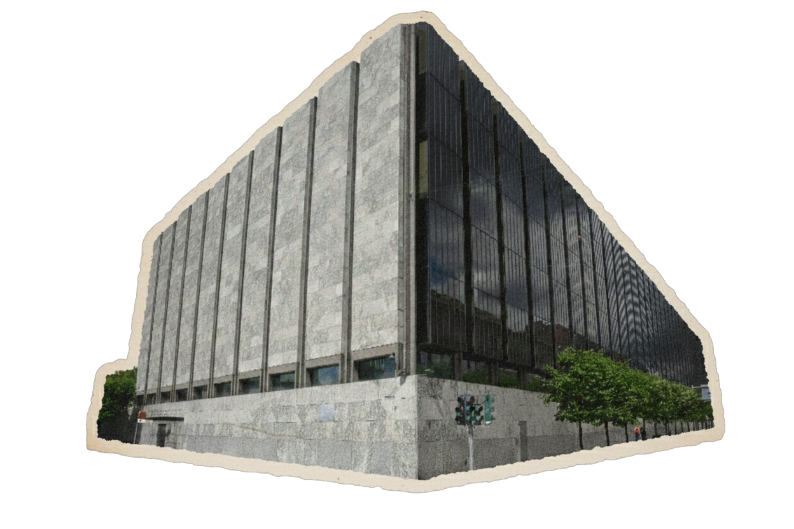
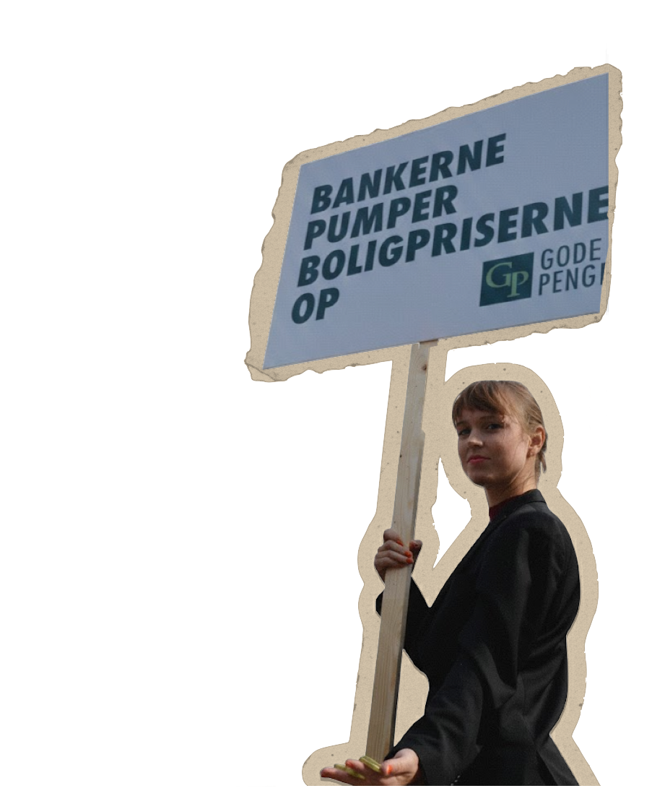
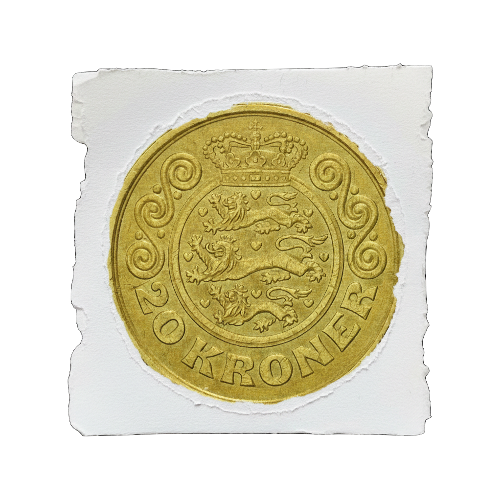

Finansskolen afholdes af Gode Penge, en forening, der arbejder for at skabe debat og oplysning om det danske penge- og finanssystem.
Vi tror på, at en bedre forståelse af penge- og finanssystemet er afgørende for en informeret demokratisk debat om økonomi, ulighed og klima.
Læs mere om Gode Penge herVi arbejder med at udbrede viden om, hvordan penge skabes, cirkulerer og påvirker samfundet. Vi ønsker at gøre komplekse finansielle emner tilgængelige for alle.
Gennem rapporter, foredrag og debatarrangementer arbejder vi for at styrke den finansielle forståelse i Danmark – og samtidig arbejde for en mere demokratisk og bæredygtig sektor.
Bliv aktiv i Gode Penge